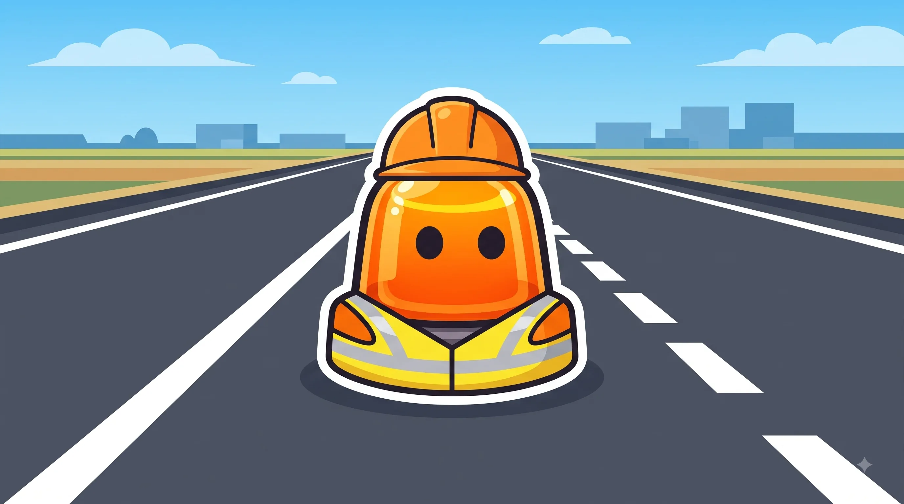
Señales horizontales y marcas viales
Líneas, flechas y símbolos pintados en el asfalto, con su propio código.
Esquema
Van a lo largo de la vía. Separan carriles o sentidos.
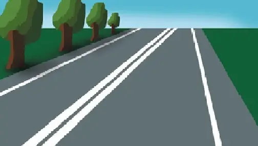
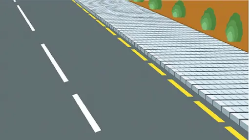
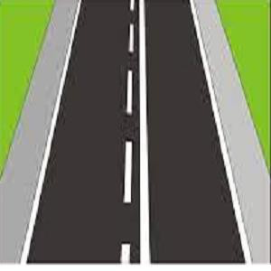
Cruzan la vía. Marcan dónde parar o ceder.
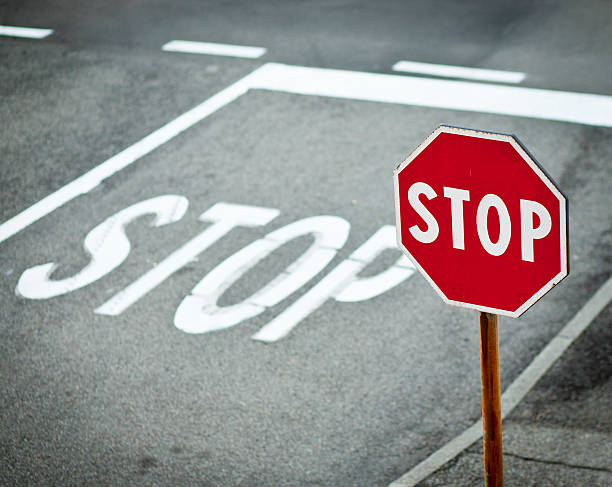
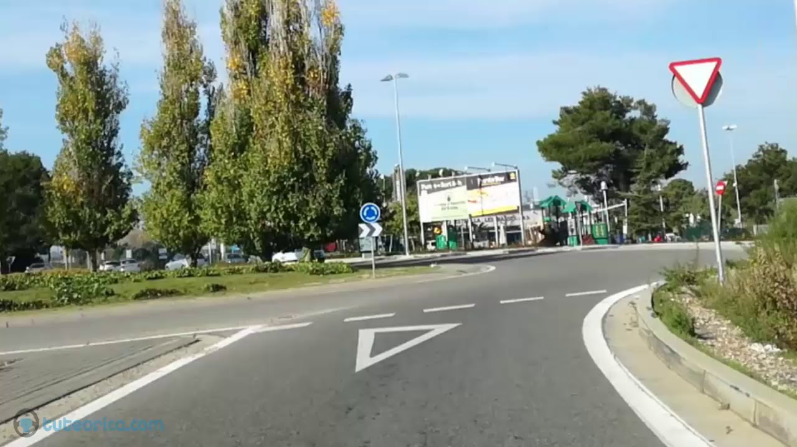
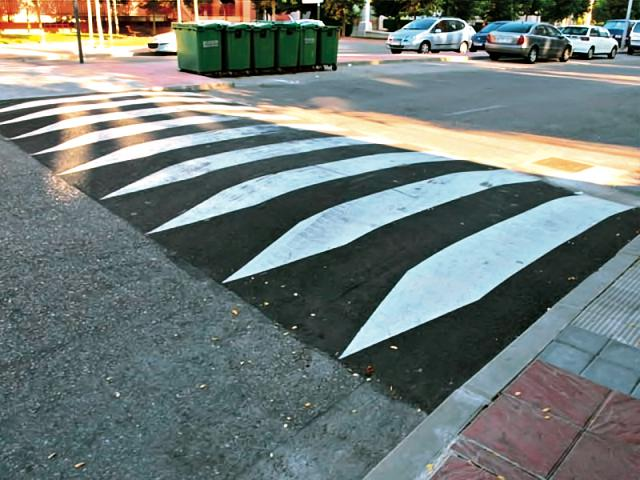
Líneas amarillas en el bordillo. Regulan parar y estacionar.
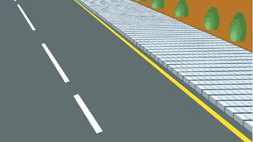
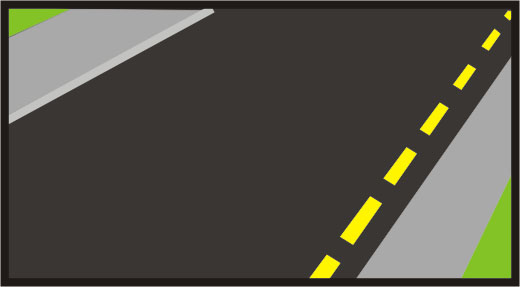
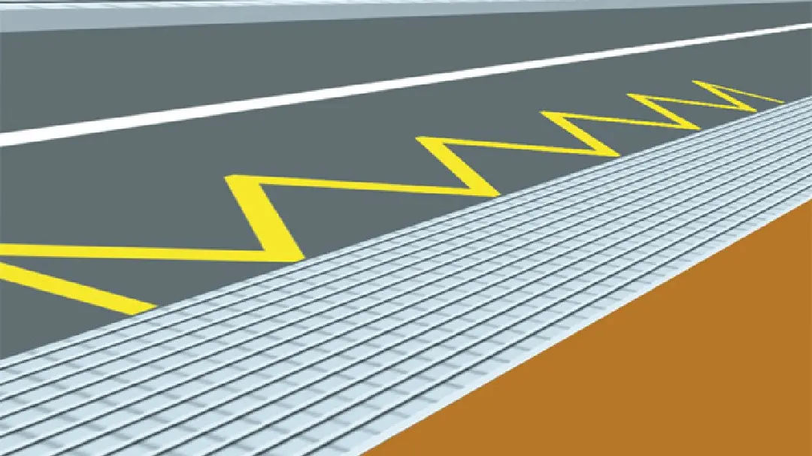
Flechas, símbolos e inscripciones pintadas en el carril.

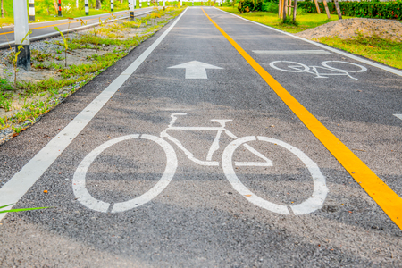
Línea continua vs discontinua
Línea continua
NUNCA la cruces
Línea discontinua
Cruza SOLO si es seguro
| Línea continua | Línea discontinua | |
|---|---|---|
| ¿Se puede cruzar? | No, nunca | Sí, si hay visibilidad y espacio |
| ¿Para qué se usa? | Separar sentidos sin visibilidad suficiente | Separar carriles donde se puede adelantar o cambiar |
| ¿Y la línea mixta? | Se cruza solo desde el lado de la discontinua | Se cruza solo desde el lado de la discontinua |
Trucos para no olvidarlo
Continua = pared invisible.
Como si hubiera un muro pintado en el suelo: ni se cruza ni se adelanta.
Discontinua = puerta abierta.
Puedes cruzarla si ves que no viene nadie y hay espacio.
Zigzag amarillo = "aquí no, ahí sí".
Suele marcar paradas de bus o zonas escolares: nunca pares encima.
Confusiones típicas
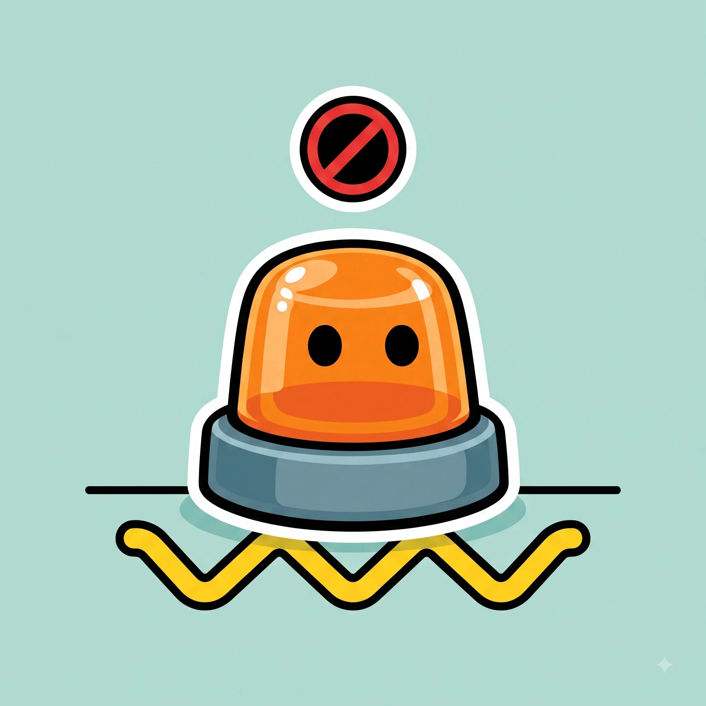
Ponte a prueba
Otros temas
Señales verticales
La forma y el color ya te dicen el mensaje antes de leer nada.
Velocidad y distancias de seguridad
A más velocidad, la frenada crece mucho más rápido que la reacción.
Normas generales de circulación
Las reglas base que deciden por ti cuando no hay ninguna señal.
Adelantamientos
Cuándo, cómo y dónde se puede adelantar con seguridad.
Intersecciones y prioridad de paso
Quién pasa primero en cruces y glorietas.
Autopistas y autovías
Incorporaciones, carriles y normas específicas de vías rápidas.
Alcohol, drogas y fatiga
Tasas máximas y por qué te la juegas más de lo que crees.
El vehículo: mantenimiento y elementos de seguridad
Lo mínimo que debes revisar antes de coger el coche.
Accidentes: actuación y primeros auxilios
Proteger, avisar y socorrer, en ese orden.
Sanciones y puntos del carnet
Cómo funciona el sistema de puntos y qué te los quita.
Casos especiales: ciclistas, peatones, animales y meteorología
Las situaciones que no siguen la norma "de manual".